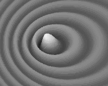
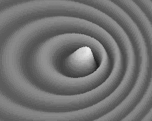

 |
 |
 |
| 00 | 01 | 02 | 03 | 04 | 05 | 06 | 07 | 08 | 09 | 10 | 11| 12 | 13 | 14 | 15 | 16 | 17 | 18 | 19 | 20 | 21 | 22 | 23 | 24 | 25 | 26 | 27 | 28 | 29 | 30 | 31 | 32 | 33 | 34 |
THE WAVE THEORY POSTULATES
 |
 |
|
Matter is made of waves.
The material universe is made purely out of aether.
A Wave Theory for matter and all forces.
|
Albert Einstein's second postulate says that the speed of light is the same for all inertial observers. This is totally false. From an absolute point of view, light travels at a constant speed through aether, but any moving observer will be misled because of the Lorentz transformations, which are nothing else but a Doppler effect. Aether exists. Matter is purely made out of electrons, which are spherical standing waves. Such waves do not disappear because aether is full of strong and constant waves incoming from all matter in the universe, whose energy is transferred to electrons. Then this energy is radiated by electrons as spherical wavelets, and all forces work using such wavelets. Because any wave exerts a radiation pressure, the result is motion. This motion involves the Doppler effect, so one should understand what is going on while a standing wave structure moves through aether. This leads to the Lorentz transformations. This means that standing waves inside matter should obey the Lorentz transformations. Matter must contract on its displacement axis. It must slow down its evolution speed and a time shift will also occur. Lorentz was right. Surprisingly, this leads to Relativity. Lorentz's Relativity. The Postulates. Most of the the following postulates were in my first book La Théorie de l'Absolu ( The theory of Absolute) in May 2000. |
THE WAVE THEORY POSTULATES
|
1 - THE AETHER
|
Descartes discovered aether (Aiqhr or Aither from Greek mythology) as a medium for light waves. However, aether proves to be much more important because all forces are transmitted by aether waves, and because matter itself is made of spherical standing waves. Aether should be homogeneous and elastic in order to transmit lossless waves. Fresnel was wrong. The light waves do not oscillate transversally, so there is no need for a very special rigid medium capable of transmitting such waves. Because there is no infinite, aether should exist inside a huge but still finite space. Because of its elasticity, it could also expand gradually. This could explain the expansion of the Universe. The whole Universe is made purely out of aether. Nothing else. So the Wave Theory's first postulate should be:
|
The aether exists as a homogeneous and elastic substance inside a huge but finite space, and as a medium for waves responsible for matter and all forces. |
2 - ELECTRONS
|
Electrons are spherical standing wave systems which can move using the Doppler effect. Each unit is identical. It should be pointed out that it does not contain ingoing and outgoing waves. It is rather an oscillator. Some of its energy is still present inside a one meter radius sphere, but most of it certainly is effective inside an atom's area. Because nodes and antinodes appear two times per period, there are two possible spins for electrons. Positrons are identical and also permit two spins while vibrating in-between. Electrons could have been created during a very long period. One can presume that many aether waves could rarely add themselves exactly at the same point, using Huygen's principle.
|
Electrons are spherical standing wave units capable of motion. |
3 - THE AMPLIFICATION PROCESS
|
Any standing wave system usually very quickly radiates all of its energy. In order to be stable it must be fed with energy. The page on wave mechanics explains the amplification process by means of the lens effect. This energy first came from waves which were already present inside aether. But now it comes from all the electrons of the whole Universe. Those waves contain huge quantities of energy, which is constantly recycled and returned to aether in all directions.
|
Electrons are amplified by incoming waves from all other electrons in the Universe. |
4 - THE SPEED OF LIGHT
|
It is a well-known fact that the speed of a wave propagating through any homogeneous medium is constant. Its frequency and its amplitude have no effect. There is no difference while they are crossing other waves either. Any moving observer certainly cannot measure this speed correctly because he encounters the Lorentz transformations. This explains why Relativity appears (but only appears) to be true.
|
The light and aether waves' speed is constant and absolute. |
5 - THE ELECTRON'S CONSTANT FREQUENCY
|
The electron spin can be explained because standing waves present nodes and antinodes two times per period. If so, the frequency for both spins must be the same, but it should slow down at high speed according to the Lorentz transformations. It should also be the same for positrons. Mechanically, any amplification process generates a trend towards higher frequencies, but because aether cannot be perfect it should have a limit. Moreover, all electrons should adjust their frequency in the same neighborhood, explaining why there are no free positrons. The resulting wavelength is incredibly small, certainly less then 10 ^ –18 meter. However, the electron's frequency must decrease while accelerating, in accordance with the Lorenz transformations.
|
All electrons at rest oscillate on the same constant frequency. However, the rate for moving electrons must slow down in accordance with the Lorentz transformations. |
6 - THERE IS NOTHING BUT ELECTRONS
|
Any particle which is not an electron or a positron is made of several electrons or positrons. For example, a quark contains two electrons and a secondary standing wave system always exists between them as a result of their waves' addition and amplification. This appears to be an electrostatic field, a magnetic field, or a much more intense gluonic field while they are very close to each other. Such gluonic fields are also matter, they may contain a lot of energy as a mass increase but they still are electrons.
|
Matter is made purely out of electrons. |
7 - HUYGENS' WAVELETS
|
The wave mechanics page explains the electron's amplification process as a lens effect. Electrons borrow energy from aether waves and constantly radiate it. This produces spherical wavelets, which are compressed or expanded according to the Doppler effect. Hence, the Huygens' Principle appears to be true, but there is an important difference. The number of those wavelets is not infinite. The very small difference between an infinite and a finite number of wavelets can explain gravity. Those wavelets can explain light and its polarization, and they can also explain all forces. Neutrinos do not exist. Photons do not exist. Maxwell's electromagnetic waves do not exist. The electrons' Quantum properties have been incorrectly transferred to light.
|
Light and all forces are the result of genuine Huygens' spherical wavelets emitted by electrons. |
8 - THE RADIATION PRESSURE
|
Aether waves can exert a pressure on electrons. They can accelerate matter, decelerate it or change its direction. This phenomenon is explained on the page concerning wave mechanics.
|
Radiation pressure is the only existing force. |
9 - MOTION
|
There is no attractive force. Any attraction effect is a result of forces in opposite direction. The radiation pressure is a repulsive force, and the result is motion.
|
|
Motion is the result of radiation pressure. |
10 - THE MASS-ENERGY EQUIVALENCE
|
The electron can move using the Doppler effect and this produces a wave compression the same way a "subsonic boom" does. The wave theory shows that kinetic energy can be explained by the means of active and reactive forces according to the Doppler effect. The same calculation also shows how action and reaction work, and why matter mass must increase as Lorenz predicted.
|
|
Matter mass is fixed with its waves' energy, and because motion produces wave compression in accordance with the Doppler effect, it also increases their energy, thus their mass. |
11- THE SHADE EFFECT
|
The electrons absorb energy from the aether waves, and so waves coming from any opposite direction are stronger in comparison. This is the shade effect, an attractive force. Usually electrons also radiate the same quantity of energy in all directions and the final result is null. However, this is not the case any more while two of them are close together. Then the on-axis radiation causes a stronger effect. This means that the shade effect is then stronger for transverse directions, and the result is a transverse attractive force.
|
|
The shade effect causes the radiation pressure from opposite directions to be stronger, making it an attractive force. |
12 - THE LAW OF ALL LAWS
|
The second main postulate from Einstein's theory of Relativity says that "all the laws of physics are the same in every inertial reference frame". This is fully true. However, this "law of all laws" was Henri Poincaré's discovery, and he also discovered Relativity. What should be called "the Law of Constancy of physical phenomena" was worded by Poincaré himself in 1904, hence before Einstein's 1905 Special Relativity:
|
"The laws of physical phenomena are the same, whether for an observer fixed, or for an observer carried along in a uniform movement of translation, so that we have not or could not have any means of discerning whether or not we are carried along in such a motion." - Henri Poincaré. |
13 - ACTION AND REACTION
|
According to Newton's third law, any action should be followed by an opposite reaction of equal force. This law appears to be false since the discovery of Relativity. Because waves are involved, the Doppler effect should be involved too. The reactive force is not always opposite either, but from any observer's point of view, it seems to be so. Although forces such as gravity cannot act faster then the speed of light, they can still act in a simultaneous way. This is no longer true while a system is moving through aether, but is still works as if it was simultaneous because of the Lorentz transformations and because of Poincaré's "law of all laws" as worded above.
|
Action and reaction wave forces are submitted to the Doppler effect and they are simultaneous. |
14 - ENERGY
|
The radiation pressure can accelerate or decelerate matter. Then the Doppler effect is increased or decreased, and matter wave energy also changes. A very special case of energy is the gluonic field mass, which might be seen as "canned kinetic energy" because only very fast electrons and positrons can produce it and maintain it while they are "glued" together. A gluonic field is a sort of "wave spring" capable of accelerating particles. This phenomenon explains why energy can be extracted from the fission of radioactive elements or from hydrogen to helium fusion.
|
Energy is the result of motion. |
15 - ANY MOTION IS COMPOSITE
|
Any motion must be seen as a series of zigzag or round trip displacements, whose speed is that of light and is always the same. Any other speed is composite in nature. So any speed faster than the speed of light is impossible. Because aether exists, matter as standing waves really works according to the Lorentz transformations. This postulate explains why the electron frequency decreases at high speed, and why distances on the displacement axis contracts.
|
There is only one basic speed: the speed of light. |
16 - THE CARTESIAN FRAME OF REFERENCE
|
Descartes discovered both aether and the frame of reference system known as the Cartesian frame. From that very instant Galileo's Relativity principle should have been declared invalid. Such a "Galilean inertial frame of reference" is incompatible with any motion using absolute values. From a mechanical point of view, the Lorentz transformations were already foreseeable. It should be pointed out that Woldemar Voigt and Albert Michelson both found this incompatibility before Lorentz between 1885 and 1887.
|
A Cartesian frame of reference is at rest inside aether and its coordinates are absolute. |
17 - SPACE AND TIME DO NOT TRANSFORM
|
Space and time do not transform because they do not really exist. As soon as possible, they should be referenced to electrons at rest as a convention. For now, and maybe forever, "at rest" means "in our galaxy" because of the law of Relativity, which is worded in Postulate No. 21. Speaking about space contraction and time dilation is absurd. Speaking of gravity as a space curvature is delirious, especially while one does not explain how and why gravity can do that. In the future, this will certainly make scientists laugh a lot.
|
Space and time values should be linked to the electron's wavelength and frequency while it is at rest as compared to our galaxy. |
18 - THE CAUSALITY PRINCIPLE
|
Wave mechanics indicates that any event causes new events. A Cause may be seen as a motion, electronic waves being more or less compressed because of the Doppler effect. Then they radiate compressed wavelets adding or destroying themselves, and the result is a stronger positive or negative force, which produces many Effects as a motion change all around. And so on. This means that any Effect becomes a Cause. This strongly indicates that the future is already fixed; this is determinism. One can nevertheless admit that inside aether, the waves' energy could be randomly distributed among aether granules. Then the result could also be randomly distributed, and this is a significant step towards our Liberty... So the previous Causality principle "The same causes produce the same effects" may be wrong. Personally, I wouldn't agree with that, but this is very subjective, indeed irrelevant here.
|
Any Effect has a Cause and becomes a new Cause acting at the speed of light by means of waves. |
19 - THE LORENTZ TRANSFORMATIONS
|
Lorentz was right. Matter really transforms at high speed. This is one of the most fundamental laws in nature, and it should be called "Lorentz's first law" :
|
Matter contracts itself on its displacement axis in the same manner as the standing waves of which it is made. Because of the Doppler effect and in accordance with its absolute speed through the aether, this contraction produces a time shift, an increase of its mass, and a reduction of its evolution speed. |
20 - FACTS ARE ABSOLUTE
|
Albert Einstein was wrong. The Lorentz transformations indicated a Reciprocity, which leads to Relativity. However, one should beware of mathematics. All politicians can transform statistics, but scientists simply cannot transform time and space. Aether cannot be verified, but it still exists. Any phenomenon should be evaluated as if it was at rest. Otherwise it will seem distorted. There is no true Reciprocity. There is no true Relativity.
|
Facts are absolute. |
21 - THE LAW OF RELATIVITY
|
However, Relativity proves to be a very useful, indeed essential, in order to predict what will seem to happen. One should be aware that it is an illusion, but it still is what happens according to our senses. Our world is highly Relative. Because it was Lorentz's idea first, it should be called Lorentzian Relativity. It usually appears to be the same as Einstein's, but it uses a different way to evaluate moving objects. So it sometimes better predicts different effects and explains fairly well many phenomena such as the twin paradox and the Sagnac effect, for example. Very few people could understand Einstein's Relativity. Lorentz's Relativity appears to be much simpler:
|
From its own point of view, any material body seems at rest and other entities only act, react, and seem affected by the Lorentz transformations according to their apparent speed. |
22 - GRAVITY
|
Gravity is only a very weak residual force compared to the huge quantities of energy involved inside matter. One should first consider that waves traveling through aether are mainly flat waves, for which radiation pressure is exerted in an optimal way. However, this is no longer the case for wavelets emitted by electrons. Those waves are spherical and cannot exert a maximum radiation pressure on the whole area containing an electron. A significant part of them is oriented under a certain angle. This can be evaluated using mathematics by means of Huygens' Principle. The differential calculus invented by Newton and Leibniz solved this problem by the infinitely small, however, a very simple computer program can evaluate a finite number of wavelets, and one can easily show that the result is not exactly the same. Newton's formula works correctly but from this new point of view one can find a lot of anomalies. The G constant cannot be perfectly constant. Gravity does not use specific particles or waves. It is definitely important for celestial mechanics but it certainly is not the "fundamental phenomenon" of the Universe. The Sun's Gravity cannot bend light waves, but there are plenty of particles around the Sun which can. A "General Relativity theory" for such a non-significant force is useless and obsolete.
|
Because Huygens' Principle does not give the same results using a finite number of wavelets, a finite number of electrons explains Gravity as the result of a small deficit between the radiation pressure from curved waves on one hand and on the other hand, the shade effect involving plane waves containing exactly the same amount of energy. |
23 - LIGHT
|
Light is made of spherical wavelets emitted all around by electrons which add or destroy themselves according to Huygens' Principle. All radiations from radio frequencies to gamma are identical, being pulsated on a lower secondary frequency. This happens only while electrons are destabilized. Then they oscillate around their atom's core like a pendulum, and the light is polarized if they oscillate along a straight line. Radio waves occur while free electrons move back and forth inside any metallic wire antenna. Augustin Fresnel was wrong: light waves do not oscillate transversally. The wave diagram shows patterns which are alternately in phase, then in phase opposition, and such zones do oscillate transversally. Electrons can react correctly because half of them are also in phase opposition. When electrons oscillate along a circle there is no polarization, albeit it still can rotate clockwise or counterclockwise. I know that nobody will believe it, but light is not stopped by matter. Matter as standing waves simply cannot stop regular traveling waves. However, the light can exert a pressure on half of the electrons according to their spin. So all electrons will finally radiate wavelets which will cancel the incoming light effects. This produces a shadow behind any massive object. See the page on light for more details. Heat, light or any radiation can expel one electron out of its normal atomic layer. Then it will come back or be replaced by another electron. This may induce a chemical reaction or an electric current. This explains why our eyes, a photographic emulsion, or an electronic device will detect light. Albert Einstein won a Nobel prize for this (his explanation was correct, albeit he did not believe that electrons do not rotate around the nucleus). The point is: such a detection cannot occur unless at least one electron is expelled, according to a constant threshold. Obviously, this threshold is a quantum. The light seems to work using quanta, but this behavior is that of the electron instead. So, photons do not exist.
|
The light is made of spherical wavelets emitted all around by electrons adding constructively destructively in accordance with Huygens' Principle. Radio waves, light, and higher frequency radiation are identical, being pulsated on a secondary lower frequency. |
| 00 | 01 | 02 | 03 | 04 | 05 | 06 | 07 | 08 | 09 | 10 | 11| 12 | 13 | 14 | 15 | 16 | 17 | 18 | 19 | 20 | 21 | 22 | 23 | 24 | 25 | 26 | 27 | 28 | 29 | 30 | 31 | 32 | 33 | 34 |
|
Bois-des-Filion in Québec. Email Please read this notice. On the Internet since September 2002. Last update December 3, 2009. |